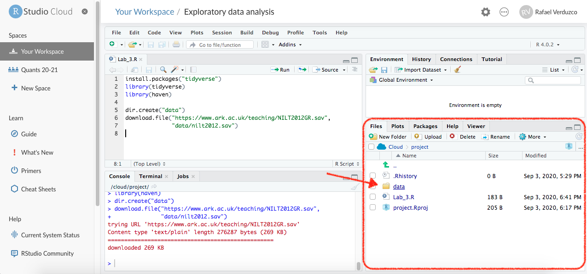

Data wrangling
Welcome to Lab 3!
In our previous session we learned about R packages, including how to install and load them. We talked about the main types of data used in social science research and how to represent them in R. Also, we played around with some datasets using some key functions, such as: filter(), select(), and mutate(). In this session we will learn how to import data in R, clean and format the data using a real-world dataset. This is a common and important phase in quantitative research.
Importing and data wrangling
Today, we will be working with data generated by the Access Research Knowledge (ARK) hub. ARK conducts a series of surveys about society and life in Northern Ireland. For this lab, we will be working with the results of the Northern Ireland Life and Times Survey (NILT) in the year 2012. In particular, we will be using a teaching dataset that focuses on community relations and political attitudes. This includes background information of the participants and their household. Please take 5-10 minutes to read the documentation of this dataset (click here to access the documentation). p.s. You will have to regularly consult this document to understand and use the data in NILT. So, I recommend you to save the PDF file in your local drive if you can. This NILT teaching dataset is also what you will be using for the research report assignment in this course (smart, isn’t it?) - so it’s worth investing the time to learn how to work with this data through the next few labs, as part of the preparation and practice for your assignemnt.
Downloading and reading the data
We will continue using RStudio Cloud, as we did in our previous labs. Please follow the next steps:
- Go to your ‘Quants lab group’ in RStudio Cloud (if you have not joined a shared space, follow the instructions in Lab 2).
- Start the project called ‘NILT’ located in your lab group.
- Once you have initialized the project, generate a new
Rscrip file, and save it as ‘Exploratory analysis’. - Load the
tidyverseandhavenpackages. This last package is useful to import data from SPSS (thetidyversepackage was pre-installed in your session). You can copy, paste, and run the following functions from your script:
Next, we will create a folder to store the data. Then, download and read the NILT data set, following the next steps:
- From your script, create a new folder called ‘data’:
dir.create("data")- Download the data using the
download.file()function. Remember that you have to specify the URL first, and the destination of the file second (including the folder).
download.file(
"https://www.ark.ac.uk/teaching/NILT2012GR.sav",
"data/nilt2012.sav"
)- Take a look to the ‘Files’ tab in pane 3, you will see a folder called ‘data’, click on it, and you will see the
nilt2012.savfile.

- To read this type of file use the
read_sav()function. Read the.savfile and assign it to an object callednilt.
nilt <- read_sav("data/nilt2012.sav")And that’s it! You should see a new data object in your ‘Environment’ tab (Pane 2) ready to be used. You can also see that this contains 1204 observations (rows) and 133 variables (columns). Lets glimpse our newly imported data and see the type of variables included.
glimpse(nilt)Data wrangling
As you can see from the result of glimpse, the class for practically all the variables is <dbl+lbl>. What does this mean? This happened because usually datasets use numbers to represent each of the categories/levels in categorical variables. These numbers are labelled with their respective meaning. This is why we have a combination of value types (<dbl+lbl>). Take the example of the variable called rsex, as you can see from the values displayed using glimpse(), this includes numbers only, e.g. 1,1,2,2.... This is because ‘1’ represents ‘Male’ respondents and ‘2’ represents ‘Female’ respondents in the NILT dataset (n.b. the authors of this lab workbook recognise that sex and gender are different concepts, and we acknowledge this tension and that it will be problematic to imply or define gender identities as binary, as with any dataset. More recent surveys normally approach this in a more inclusive way by offering self-describe options). You can check the pre-defined parameters of the variable in NILT in the documentation or running print_labels(nilt$rsex) in your console, which returns the numeric value and its respective label. As with rsex, this is the case for many other variables in this data set.
You should be aware that this type of ‘mix’ variable is a special case since we imported a file from a foreign file that saves metadata for each variable (containing the names of the categories). As you learned in the last lab, in R we treat categorical variables as factor. Therefore, we will coerce some variables as factor. This time we will use the function as_factor() instead of the simple factor() that we used before. This is because as_factor() allows us to keep the names of each category in the variables. The syntax is exactly the same as before. Copy and run the following from your script:
# Gender of the respondent
nilt <- nilt %>% mutate(rsex = as_factor(rsex))
# Highest Educational qualification
nilt <- nilt %>% mutate(highqual = as_factor(highqual))
# Religion
nilt <- nilt %>% mutate(religcat = as_factor(religcat))
# Political identification
nilt <- nilt %>% mutate(uninatid = as_factor(uninatid))
# Happiness
nilt <- nilt %>% mutate(ruhappy = as_factor(ruhappy))Notice from the code above that we are replacing the ‘old’ dataset with the result of the mutated variables that are of type factor. This is why we assigned the result with the assigning operator <-.
What about the numeric variables? In the documentation file there is a table in which you will see a type of measure ‘scale’. This usually refers to continuous numeric variables (e.g. age or income).1 Let’s coerce some variables to the appropriate type.
In the previous operation we coerced the variables as factor one by one, but we can transform several variables at once within the mutate function. As we did before, copy and run the following code in your script:
# Coerce several variables as numeric
nilt <- nilt %>%
mutate(
rage = as.numeric(rage),
rhourswk = as.numeric(rhourswk),
persinc2 = as.numeric(persinc2),
)Before doing some analyses, we will drop unused levels (or categories) in our dataset using the function droplevels(), as following:
# drop unused levels
nilt <- droplevels(nilt)The previous function is useful to remove some categories that are not being used in the dataset (e.g. categories including 0 observations).
Finally, save the NILT survey in an .rds file (this is the R format). We will not use this file now, but this will save us time formatting the dataset in next labs (So, we do not have to repeat the steps above every time).
saveRDS(nilt, "data/nilt_r_object.rds")Read the clean dataset
Phew! Good job. You have completed the basics for wrangling the data and producing a workable dataset.
As a final step, just double check that things went as expected. For this purpose, we will re-read the clean dataset.
Activity
- Using the
readRDS()function, read the.rdsfile that you just created in the last step and assign it to an object calledcleaned_data. Remember to include the full directory of the file using quotation marks inside the function. - Run the
glimpsefunction on thecleaned_dataobject. - Run the
glimpsefunction on theniltobject. - Do they look the same? If yes, it means that you successfully saved your work.
Footnotes
Be careful, in some cases these actually correspond to discrete numeric values in this dataset (things that can be counted, e.g. number of…).↩︎